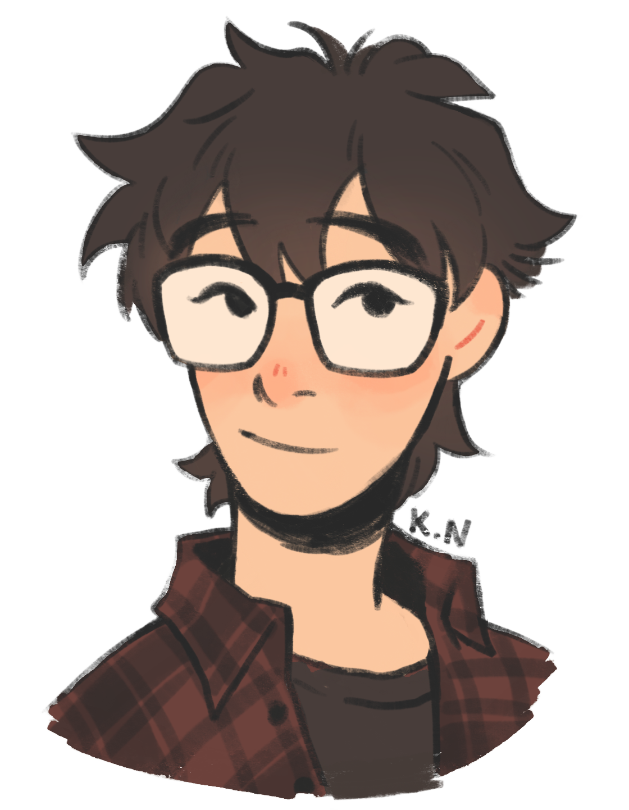

Hello!
I'm currently a college student majoring in Web Design, based in Arizona. I intend to go into the field of design!
I have always been a creative person, and I also find fulfillment in the process and result of refinement. There is always room for improvement, especially for visuals!
Outside of design, one of my favorite pastimes is art. As a child, you could often find me with a pencil and paper, usually drawing dragons or dinosaurs. I mainly enjoy character design and illustration.